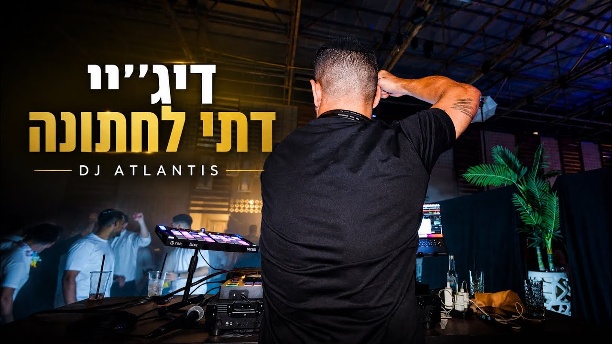

היכרות עם כל גוני הקהל
קהל דתי לאומי עשוי לשלב אמוני, ישראלי, מזרחי ולהיטים; קהל חרדי עשוי להעדיף חסידי וישיבתי; ובאירוע חרדי מודרני אפשר לבנות שילוב רחב יותר בגבולות המשפחה. התכנון מתחיל בהיכרות, לא בתווית.
אלי מועלם | DJ ATLANTIS
דיג'יי ותקליטן לקהל דתי, דתי לאומי, חרדי וחרדי מודרני - עם מוזיקה שמותאמת למשפחה, למסורת ולגבולות שבחרתם, מרגע קבלת הפנים ועד השיר האחרון.
התמחות בקהל הדתי והחרדי
הבחירה אינה מסתכמת ברשימת שירים. דיג'יי למגזר הדתי צריך להבין את ההבדלים בין קהל דתי ודתי לאומי לבין קהל חרדי או חרדי מודרני, ולחבר בין דורות וסגנונות בלי לאבד את אופי האירוע.
קהל דתי לאומי עשוי לשלב אמוני, ישראלי, מזרחי ולהיטים; קהל חרדי עשוי להעדיף חסידי וישיבתי; ובאירוע חרדי מודרני אפשר לבנות שילוב רחב יותר בגבולות המשפחה. התכנון מתחיל בהיכרות, לא בתווית.
קבלת הפנים, הכניסה, הריקודים והסיום דורשים אנרגיה שונה. תכנון נכון שומר על רצף טבעי ומאפשר לעבור בין חסידי, אמוני, ישראלי ומזרחי בלי לעצור את הרחבה.
לפני האירוע מגדירים מה מתאים, מה לא יושמע ואילו רגעים דורשים רגישות מיוחדת. בתוך המסגרת שסיכמנו נשארת גמישות לקריאת הקהל, כדי שהרחבה תרגיש חיה ולא מתוכנתת.
התאמה לפני הכול
ממפים יחד את סוג הקהל, הסגנונות האהובים, שירי החובה, השירים שלא מתאימים ורמת ההפרדה. ההחלטות החשובות מתקבלות מראש ובשפה ברורה.
המטרה היא לחבר בין חלקי האירוע ובין קבוצות הגיל. כל מעבר נבחר לפי האנרגיה ברחבה, כך שגם צעירים וגם מבוגרים מוצאים את המקום שלהם.
באירוע עם הפרדה, רבנים, ברכות או מנהגים משפחתיים, המוזיקה והתזמון צריכים לשרת את התוכנית. אלי מתאם מראש את הנקודות האלה עם בעלי השמחה.
גם תכנון טוב אינו מחליף הקשבה לרחבה. בזמן האירוע משנים קצב, סגנון ואורך מקטע לפי תגובת האורחים, בלי לפרוץ את הגבולות שסוכמו.
לכל אירוע הקצב שלו
העמוד הזה מרכז את השירות לקהל דתי, דתי לאומי, חרדי וחרדי מודרני. למידע מעמיק על קהל או סוג אירוע מסוים אפשר להמשיך לעמוד הייעודי המתאים.
תכנון מוזיקלי לקבלת הפנים, לחופה ולריקודים, עם התאמה לקהל דתי, דתי לאומי או מסורתי. כאשר נדרשת הפרדה, המבנה והמעברים נקבעים מראש עם הזוג והמשפחה.
מידע על דיג'יי לחתונה דתיתשילוב טבעי בין שירי נשמה ואמונה, מוזיקה ישראלית, חסידית, מזרחית ולהיטים שמתאימים לצעירים - לפי הקו שבוחרים בעלי האירוע.
מידע לקהל הדתי לאומימוזיקה חסידית, ישיבתית ואמונית לצד שילובים נקיים של ישראלי, מזרחי ועדכני - רק לפי הקו שהמשפחה מאשרת. גם ההפרדה, המעברים ורגעי השיא מתוכננים מראש.
מידע על דיג'יי חרדי וחרדי מודרניאירוע שמדבר לילדים, לחברים ולמשפחה יחד. המוזיקה נבנית סביב חתן או כלת השמחה, גיל האורחים והערכים שהמשפחה רוצה לשמור.
בחינה, אירוסין או חגיגה משפחתית אפשר לשלב מסורת, מוזיקה עדתית, מזרחית וישראלית עם רחבה שמחה שמחברת את כל המשפחה.
מידע על חינה דתיתלשמוע לפני שבוחרים
אלה הסטים שמוגדרים כדתיים בערוץ הרשמי, מסודרים לפי מספר הצפיות - הסט הנצפה ביותר מופיע ראשון. כך אפשר לשמוע רצף מלא ולא להסתפק בקטע קצר.
42 דקות של סט דתי לקיץ 2026 שמתאים לחתונה דתית. אפשר להתרשם מרצף מלא, מהמעברים ומהדרך שבה נשמרת האנרגיה לאורך הסט.
פתיחת הסט ביוטיוב30 דקות של סט דתי לאירועי ל״ג בעומר וחגיגות קהילתיות, עם בנייה הדרגתית ורצף מוזיקלי שאפשר לבחון מתחילתו ועד סופו.
פתיחת הסט ביוטיובאירוע אמיתי לצפייה
צפו באלי מועלם DJ ATLANTIS במהלך חתונה דתית אמיתית, עם התאמת מוזיקה לקהל, קריאת רחבה ואנרגיה שנשמרת לאורך האירוע.

מה רואים בסרטון: רגעים מהרחבה, את האנרגיה באירוע, את התאמת המוזיקה לקהל ואת העבודה על עמדת הדיג׳יי לאורך החתונה.
הגישה המוזיקלית: בניית רצף שמתאים לזוג, למשפחות ולאופי הקהל, תוך שמירה על גמישות וקריאה של הרחבה בזמן אמת.
פרטי האירוע
המלצת הזוג
״אלי היה הדיג׳יי בחתונה שלנו וכבר מהפגישה הראשונה ידענו שהוא הבחירה הנכונה עבורנו. רואים מיד את המקצועיות שלו ואת האהבה הגדולה למה שהוא עושה. לאורך כל הדרך הוא היה קשוב סבלני וזמין לכל שאלה ולכל בקשה. בחתונה עצמה הוא הגיע עם חיוך גדול ועם אנרגיות מטורפות. הוא יישם את כל הבקשות שלנו ריגש אותנו ברגעים הנכונים וקלט את האנשים ברחבה בצורה מושלמת. המוזיקה הייתה מדויקת והמעברים היו מעולים. לא הפסקנו לרקוד והרחבה נשארה מלאה ושמחה לאורך כל הערב. גם אחרי החתונה קיבלנו המון מחמאות מהאורחים על המוזיקה ועל האווירה. אין ספק שנמליץ עליו שוב ושוב לכל מי שמחפש דיג׳יי מקצועי קשוב ומוכשר עם לב ענק ❤️״
הזוג מהחתונה בגאמוס אירועים
תהליך מסודר
תהליך קצר וברור נותן לכם ודאות, ומשאיר לאלי את הגמישות המקצועית שנדרשת כדי לקרוא את הרחבה בזמן אמת.
שולחים תאריך, מקום וסוג אירוע ומוודאים שהתאריך פנוי.
מדברים על הסגנון, המשפחה, מבנה הערב והדברים שחשוב לשמור.
בוחרים שירי חובה, סגנונות אהובים ורגעים מיוחדים, בלי להפוך את הערב לפלייליסט קשיח.
בזמן האירוע אלי קורא את הקהל, משנה כיוון כשצריך ושומר על רצף ואנרגיה.
עמודים ממוקדים
העמוד הזה הוא עמוד המטרייה לקהל הדתי והחרדי. העמודים הייעודיים מעמיקים בנפרד בקהל הדתי לאומי ובקהל החרדי והחרדי המודרני, כדי שכל עמוד יענה על צורך ברור בלי לחזור על אותו תוכן.
שאלות נפוצות
תקליטן דתי מכיר את מבנה האירוע, את הקהלים ואת הרגישויות המוזיקליות של המגזר הדתי. הוא מתכנן עם המשפחה את הסגנונות, הגבולות ורמת ההפרדה, ובזמן האירוע מתאים את הרצף למה שקורה ברחבה.
לא בהכרח. הקו יכול לשלב מוזיקה חסידית ואמונית לצד מוזיקה ישראלית, מזרחית ולהיטים עדכניים, כל עוד השילוב מתאים לבעלי השמחה ולקהל.
כן. לכל קהל נבנה קו אחר: מאמוני, חסידי וישיבתי ועד ישראלי, מזרחי ולהיטים נקיים. לפני האירוע מגדירים עם המשפחה את הסגנונות, הגבולות ורמת ההפרדה.
כן. אפשר לתכנן הפרדה מלאה, חלקית או בשלבים, כולל תזמון ומעברים שמתאימים למבנה שבחרתם.
השירות מתאים לחתונות דתיות, בר ובת מצווה דתית, חינות, אירוסין ואירועים משפחתיים במגזר הדתי.
שולחים לאלי מועלם בוואטסאפ את התאריך, המקום וסוג האירוע. לאחר בדיקת הזמינות ממשיכים לשיחת היכרות ותכנון מוזיקלי.
בדיקת תאריך
כתבו לאלי מה סוג האירוע, איפה הוא מתקיים ומה חשוב לכם מבחינת הקהל והמוזיקה.